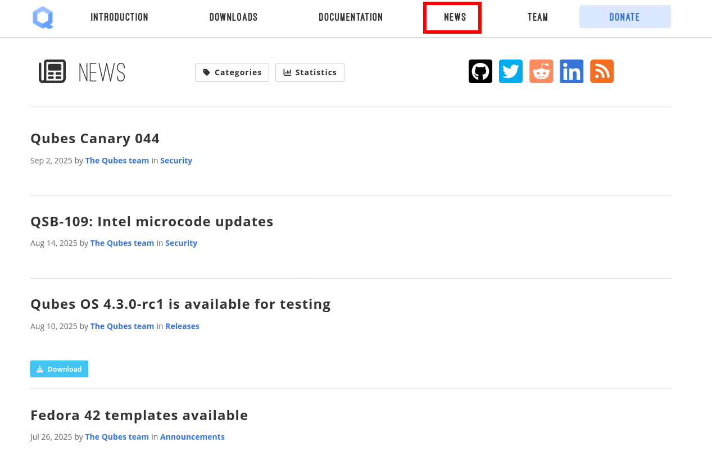
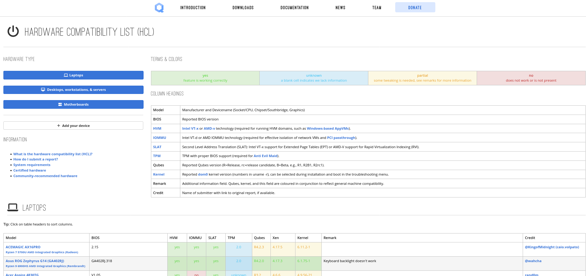

How to edit the website
Also see the Website style guide.
The Qubes OS website content is stored in the qubesos.github.io repository and its submodules. By cloning and regularly pulling from this repo, users can maintain their own up-to-date offline copy of the Qubes OS website rather than relying solely on the web.
This guide refers only to the hosted website on qubes-os.org. It was the reference point before the documentation was converted from Markdown to reStructuredText and remains as a guide if you want to contribute to the Qubes OS website. If you want to contribute to the Qubes OS documentation, please visit How to edit the documentation.
How to submit a pull request
We keep all relevant files in qubesos.github.io, as well as qubes-attachment, qubes-hcl and qubes-posts - dedicated Git repositories hosted on GitHub.
A few notes to consider:
Since Qubes is a security-oriented project, every change will be reviewed before it’s accepted. This allows us to maintain quality control and protect our users.
To give your contribution a better chance of being accepted, please follow our website style guide.
We don’t want you to spend time and effort on a contribution that we can’t accept. If your contribution would take a lot of time, please file an issue for it first so that we can make sure we’re on the same page before significant works begins.
Finally, if you’ve written something that doesn’t belong in qubesos.github.io but would be beneficial to the Qubes community, please consider adding it to the documentation or the external documentation.
For an example how to submit a pull request please refer to the example given in How to submit a pull request with the documentation.
The Qubes OS website
The Qubes OS site is generated with Jekyll, a static‑site engine that transforms Markdown, HTML, and data files into a fully rendered, deploy‑ready website.
These are the relevant repositories:
the main qubesos.github.io, as well as its submodules:
qubes-hcl and
The contents of the qubes-posts repository is reflected in the News section:

This repository is maintained by the Qubes OS team and serves the purpose of announcing relevant project news. This repository and its contents should be left as is.
The contents of the qubes-hcl repository can be seen in the Hardware Compatibility List (HCL) table:

This repository is also maintained by the Qubes OS team and its contents should be left as is. Of course you can generate and submit a Hardware Compatibility List (HCL) report at any time.
The qubes-attachment repository contains images and files that are used by or referenced in the website. Here you can add new images if needed. Then, submit your image(s) in a separate pull request to the qubes-attachment repository using the same path and filename. This is the only permitted way to include images. Do not link to images on other websites.
Quick intro to Jekyll
Jekyll is a static‑site generator that turns plain‑text files (Markdown, HTML, YAML, etc.) into a full website you can host on GitHub Pages. It works by:
Reading data: YAML front‑matter in
pages/_postsand files under_datagive variables you can reuse.Applying layouts: HTML layout files wrap your content, letting you keep a consistent header/footer, navigation, etc.
Processing includes: Reusable snippets (HTML/Liquid) can be dropped into pages.
Compiling assets: SASS/SCSS files become CSS, JavaScript is copied as‑is.
Generating the output: All source files are rendered into a
_sitefolder that contains the ready‑to‑serve static files.
The main qubesos.github.io contains the following directories:
├── data # ← YAML files with key‑value pairs used throughout the site
│ └── *.yml # e.g. site settings, navigation menus
│
├── _doc # ← Empty Markdown documentation files (previously a submodule “qubes‑doc”)
│ └── *.md # with redirects to RTD
│
├── _hcl # ← “qubes‑hcl” submodule – custom content for HCL pages
│ └── ... #
│
├── _includes # ← Reusable HTML/Liquid snippets
│ └── *.html # include with {% include filename.html %} in Markdown or layouts
│
├── _layouts # ← Page templates that wrap content
│ └── *.html # e.g. default.html, news.html, hcl.html – edit to change overall page structure
│
├── _posts # ← “qubes‑post” submodule – blog‑style entries
│ └── *_*.md # each post has YAML front‑matter
│
├── _sass # ← Source SASS/SCSS files
│ └── *.scss #
│
├── _utils # ← Helper scripts or small utilities used by the site
│ └── *.py/.sh # usually not touched unless you need custom build steps
│
├── attachment # ← “qubes‑attachment” submodule – extra downloadable files
│ └── *.* # place PDFs, images, etc. that you want linked from the site
│
├── css # ← CSS files
│ └── *.css #
│
├── fontawesome # ← Font Awesome CSS and font files
│ └── *.css/.ttf
│
├── fonts # ← Additional font files used by the site
│ └── *.woff/.ttf
│
├── js # ← JavaScript assets
│ └── *.js # edit to add or modify interactive behaviour
│
├── news # ← Templates for generating news‑type content
│ └── *.md # often paired with a layout (e.g., news.html)
│
└── pages # ← Stand‑alone pages (donate, team, about, etc.)
└── *.md/.html # each file becomes a page at /<filename>/
Cheatsheet
Goal |
Where to edit |
Typical steps |
|---|---|---|
Change site‑wide text (e.g., site title, navigation) |
|
Update the key/value pair, then rebuild. |
Modify the look of all pages |
|
Edit the HTML skeleton or SASS variables, then run preview. |
Insert a reusable component (e.g., a call‑out box) |
|
Create the snippet, then reference it with |
Add a new static asset (image, PDF) |
|
Drop the file there and link to it using a relative URL. |
Update JavaScript behavior |
|
Edit the script, ensure it’s referenced in the appropriate layout or page. |
How to serve the website locally
You can serve the website offline on your local machine by following these instructions or the instructions below. This can be useful for making sure that your changes render the way you expect, especially when your changes affect formatting, images, tables, styling, etc.
Create a template qube:
$ qvm-clone debian-12-minimal jekyll-tvm
Install packages:
$ apt install qubes-core-agent-networking
$ apt install ruby-full build-essential zlib1g-dev vim
$ apt install qubes-core-agent-passwordless-root
$ apt install firefox-esr git
Create a
jekyll-app-vmbased on thejekyll-tvmtemplate, install and configure injekyll-app-vm:
$ echo '# Install Ruby Gems to ~/gems' >> ~/.bashrc
$ echo 'export GEM_HOME="$HOME/gems"' >> ~/.bashrc
$ echo 'export PATH="$HOME/gems/bin:$PATH"' >> ~/.bashrc
$ source ~/.bashrc
$ gem install jekyll bundler
$ find . -name gem
$ bundle config set --local path '/home/user/.local/share/gem/'
$ git clone -b new-main --recursive https://github.com/QubesOS/qubesos.github.io.git; cd qubesos.github.io/
$ bundle install
$ bundle exec jekyll serve --incremental
You can view the local site at http://localhost:4000.
Quick checklist for a typical edit
Locate the right folder – use the table above to know where the content lives.
Edit the file – Markdown for content, HTML/SASS for layout/style, YAML for data.
Run a local build to verify the change looks correct.
Commit & push – include a clear commit message describing the edit.
Create a Pull Request
Feel free to ask if you need more detail on any specific folder or on how to set up the development environment!
Security
Also see: Should I trust this website?
All pull requests (PRs) against qubesos.github.io must pass review prior to be merged. This process is designed to ensure that contributed text is accurate and non-malicious. This process is a best effort that should provide a reasonable degree of assurance, but it is not foolproof. For example, all text characters are checked for ANSI escape sequences. However, binaries, such as images, are simply checked to ensure they appear or function the way they should when the website is rendered. They are not further analyzed in an attempt to determine whether they are malicious.
Once a pull request passes review, the reviewer should add a signed comment stating, “Passed review as of <LATEST_COMMIT>” (or similar). The website maintainer then verifies that the pull request is mechanically sound (no merge conflicts, broken links, ANSI escapes, etc.). If so, the website maintainer then merges the pull request, adds a PGP-signed tag to the latest commit (usually the merge commit), then pushes to the remote. In cases in which another reviewer is not required, the website maintainer may review the pull request (in which case no signed comment is necessary, since it would be redundant with the signed tag).
Questions, problems, and improvements
If you have a question about something you read in the website or about how to edit the it, please post it on the forum or send it to the appropriate mailing list. If you see that something in the website should be fixed or improved, please contribute the change yourself. To report an issue with the wesbite, please follow our standard issue reporting guidelines. (If you report an issue with the website, you will likely be asked to submit a pull request for it, unless there is a clear indication in your report that you are not willing or able to do so.)